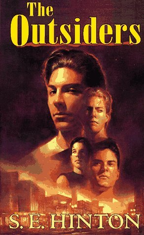

Back to Main Page
The Outsiders

- Title: The Outsiders
- Author: S. E. Hinton
- Publisher: Penguin Random House
- Price: $19.99 CAD
- Summary: The story of the Outsiders follows Ponyboy Curtis as he does his best to find his place in the world of gangs and school. The town is divided into two distinct classes: the “Greasers”, the leather wearing, knife carrying thugs of the East Side and the Socs, the social elites with fancy cars and fancier clothes. As Ponyboy grapples to find his place in this world of two halves he learns the importance of family, trust and what is most important to him.
- Reviews
- The Outsiders is a classic in young adult fiction that revolutionised the genre by presenting adolescent characters that were the opposite of everything a teenager, by adult standards, should have been. Despite it being published in 1967 and the huge changes in both society and technology since, it continues to resonate with young adult readers today. The novel is narrated from the perspective of fourteen-year-old Ponyboy, a 'greaser' who could easily be judged a hooligan because of his clothes and hair, but who in fact gets good grades at school and loves books and films. Despite coming from a 'broken home', his parents having died in a car crash when he was young, he does not drink, is not naturally violent and is embarrassed when his friend swears. His character, as well as that of the other characters, is one of the elements that I love most about the book. It makes the characters and therefore the novel as a whole more authentic, and makes the reader challenge any pre-conceived ideas they have about what a 'bad' person is. The greasers become almost anti-heroes: coming from the wrong side of the class divide, with several of them having had run-ins with the law, yet are fiercely loyal to one another and hardworking. The novel uses the greasers as well as the rival, wealthy 'Socs' to challenge stereotypes about class and what it means to be an outlaw. The young adult readers can relate to aspects of the characters from both sides of the class divide, making them realise that they're not so different after all. The novel also reflects both the immediate and long-term fears that adolescents face through the thoughts of Ponyboy, which again makes both him and the story itself easy to relate to. Despite most people reading the book are unlikely to have ever been caught up in a murder, through his detailed narration of the events we can identify with his attempts to follow his moral compass and please Darry, his older brother, whom he looks up to. Through Darry we can sense the pressure of parental expectations - something that the reader can relate to. We also see through Ponyboy the need felt by most adolescents to fit in and be part of a group, and yet also the need to be an individual and the struggle to figure out who you are within the restrictions set by society, friends, peers and family. It is perhaps this more than anything that makes teenagers continue to read it to this day.
- The Outsiders is a beautiful coming of age story that I would recommend for everyone in middle school and high school. The book’s plot is about the rivalry between the Greasers and Socs (focusing on the Greasers). The Socs are the rich, popular kids while the Greasers are the poor, bad kids. The story is about social status, growing up, finding yourself, and rebellion.
Anyone in middle/high school can relate to this book in one way or another.
The problems discussed transcend time and are applicable to today’s teens.
I think it’s very hard to find a book about teenagers that is about real teenagers, not unrealistic heroes that are facing problems that we never face. Of course, there is nothing wrong with that type of book, but it was really nice to find a book that I could relate to. It makes you feel like you are not alone and that other people are struggling with similar issues.
What makes The Outsiders such an amazing book is the characters and their relationships. Each character is important and unique. They are all their own individuals and have complex backstories. They are all “real” people.
Everyone who reads this book can find at least one character they identify with. For example, Ponyboy is an amazing student who feels like he is under immense pressure. And Darry is struggling with the responsibility of taking care of his younger brothers. The book also focuses on the relationships between the characters. All of the Greasers view each other as family members. They are very protective and loving towards each other. The relationship between the Greasers and the Socs is very strained. Most members of each gang despise each other.
A flaw with the book is that the solutions to the plot’s problems seemed simplistic. The plot is all wrapped up in one big bow which doesn’t seem realistic. To be fair, S.E. Hilton wrote this book when she was in high school and that perspective undoubtedly played into this.
I would recommend this book for ages 10+. The book does contain some mild swearing (it’s not too bad). It also contains underage drinking and smoking. It is a fairly short book that was easy to read.
I would definitely recommend The Outsiders by S.E. Hilton because of it’s interesting plot, realistic characters, and relatable story of teenage angst
- Reason for Purchase: I chose this book since it is a book that can resonate with many young people. It is a story of acceptance and of great hardships that can be understood by many. While it is true that some of the references and the subject matter may be a tad dated, I believe that this book is one that stands the test of time and is a enjoyable read no matter the current time. The book deals with any of the social issues and crime issues that the residents of Beak City are interested in and showcases them in a different light. Rather than showing it as an entirely negative thing Hinton can show that it is not by choice that the characters resort to crime and live in poverty. Additionally, The Outsiders is a book that is often read by high school students in their English classes, due to the heavy themes and wonderful symbolism throughout it. Due to this I believe that the book, while may not immediately be well received will eventually be used once the high school is completed.